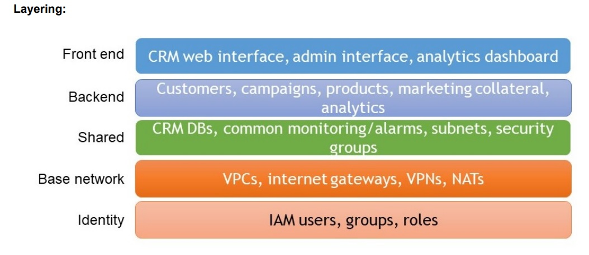

SCC
Brasil
os cloud gurus
Software Cloud Consulting
Your software development, cloud, consulting & shoring company
Carglass Germany
For about 1 year SCC Brasil worked together with the Carglass Germany internal IT Team on their Migration to AWS
Carglass is the leading vehicle glass repair and replacement company across 25 countries,
like Germany, Austria, Belgium, France, Switzerland, Sweden, Brazil,
Chile and many more.
Also in Germany Carglass is the biggest company for windshield repair and replacement.
See company site:
Carglass
Carglass was already in progress to migrate their On Premise infrastructure to AWS,
but did not have enough resources to proceed and complete the migration from OnPremise to AWS
within the the ambitious schedule. Thats why we joined their team to support them achieving their goals.
They used EC2 to migrate OnPremise, VMs, which for example had 3rd party software running for various
internal applications.
The main business application was running on a Kubernets cluster, also on EC2 machines. Setup by
kubectl, so EKS was not used.
RDS was also used as backend for various applications.
AWS Lambda was used for processing of small tasks, basically for maintenance of the AWS
infrastructure, not for business logic yet.
CloudFormation was used as infrastructure as Code Tool.
The first action was analyze the current setup and define epics to optimize the aws
infrastructure and accelerate and complete the migration.
We focused than on IaC, the AWS Account Structure, Cost-Optimization, Improvement of RPO and RTO
and of course on the ongoing Migration of resources still OnPremise
In this blog let's have a look on the most important epics
-Reorganize AWS Account Strucure
-Define and Improve Desaster Recovery Strategy and therefore RTO
-Strict usage of IaC - CloudFormation
-Cost-Opmimization
Reorganize AWS Account Structure
The current setup already contained a Master Account and Stage Accounts
It is already a good practice to separate the stages in separate accounts, but since it was neccessary to also grant acess to
external service providers to the accounts, the separation of all these parties on IAM level to grant only rights to their servers and resources,
following the principle of least privilage, was quite difficult implementing on IAM and policy level.
The better approach was to define the account structure more granular and define more dedicated accounts with its on IAM roles.
The AWS Whitepaper gives an example for a multi-account scenario.
Please have also a look in our blog about defining the multi account structure for your organization
AWS Multi Account Setup
We followed this example with small changes, which allowed for example only the Network Adminstrator to make changes on Direct Connect, Transit Gateway and Network resources. On the other side, the LeadDevs and DevOps or Service Providers still could to assume a Adminstrator Role in their Stage accounts.
The dedicated accounts where much more neatly, allowing the admins to stop or teminate manual created test/poc resources.
Also consolidated billing helped the management to monitor the aws costs on a better granularity.
Define and Improve Desaster Recovery Strategy and therefore RPO and RTO
First we had to define the Expectations on RPO and RTO together with Carglass.
All RDS instances where already creating daily snapshots, also EBS volumes, so the RPO
was already quite well, here were only small improvements neccessary, for example on the RDS Snapshot Settings and Scheduling.
The RTO left some potential for improvements
Not all resources where yet created with IaC (CloudFormation was used in general), some where created manually on the AWS Console, due to urgent requirements in the migration process.
Also some of the resources created with IaC were modified over the time manually on the AWS Console
due to urgent production issues, which caused drifts on some Stacks and therefore possible problems when updating the resources by CloudFormation.
To allow the team to re-create all resources in the case of a desaster recovery and therefore achieve a real short RTO, the strict usage of IaC must be applied consequently.
Strict usage of IaC (CloudFormation) and deployment with Jenkins Pipeline
The CloudFormation Stacks were re-structured :
-The stacks were layered to better separate the logical and strucutural elements:

Please have also a look in our blog on structuring CloudFormation Templats to get more informations about this :
How to organize CloudFormation Templates
A VPC Stack would now only contain VPC and Network resources, but no other resources like for example S3 Buckets.
Therefore the application developers never had to touch VPC or Route53 Stacks, but only their Application Layer Stacks.
-The stacks were ordered in the git repo by their layers to allow them to re-deploy in the correct orders.
Cross-References with Outputs in Inputs Values were used, but in this case of course the Stack containing the Output must be deployed first.
-Some Stacks used in 3 Stage Accounts were unified to a single stack and parameterized instead of having 3 stacks with a lot of Copy & Paste.
- All Templates were deployed by Jenkins, Pipelines for CloudFormation Deployment were introduced
- A Jenkins Pipeline to automatically create Deployment Pipelines for each Template and each stage was coded in Groovy. If a new Stack was added, this Pipeline must be triggered and it would create new Deployment Pipelines for each stage
-Drift detection problems were sent by SNS Notifications to avoid new Drifts
Cost Optimizations
The MAP programm was applied to the customer.
Since the customer migrated existing VMs/Servers from OnPremise to AWS, the AWS Migration Acceleration Program was a real good fit to save costs for Carglass.
See more infos on
AWS Migration Acceleration Program
After you create your server list in the migration hub and migrate to EC2, you can get discounts on basically any resource on aws which is tagged with the correct map tags:
- Key: "aws-migration-project-id"
Value: "MPE06XX"
- Key: "map-migrated"
Value: "d-server-01zt13xxxxxxxxx"
The EC2 instance sizes were optimized and Lambdas created to shut down and restart instances which were not
needed 24/7, but only during business hours.
Read more about how to optimize costs on AWS in our blog
Cost optimization
Training and documentation
SCC Brasil held a couple of AWS training sessions to the infrastructure team to enable them to maintain the AWS infrastructure all alone in the future. Also a lot of documentation was written in the company Confluence, including Runbooks, Best practices, Troube Shooting etc
We are glad to be able to support the Carglass Germany Team on their Cloud journey, it was a lot of fun to work with the well skilled infrastructure team and hope all the Best for them in the future.
"SCC Brasil has taken our AWS Cloud Environments to a state of the art level. Working together very closely with our engineers and developers they enabled us to establish an automated, secure and cost efficient cloud environment. Knowledge sharing and excellent documentation by SCC Brasil is very valuable. Having deep knowledge of all modern tools outside cloud technology as well, they are able to find best fitting architectures in nearly all parts in today's DevOps scenarios."
Autor

Wolfgang Unger
AWS Architect & Developer
6 x AWS Certified
1 x Azure Certified
A Cloud Guru Instructor
Certified Oracle JEE Architect
Certified Scrum Master
Certified Java Programmer
Passionate surfer & guitar player